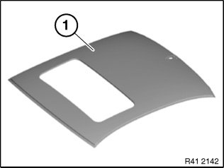
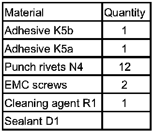
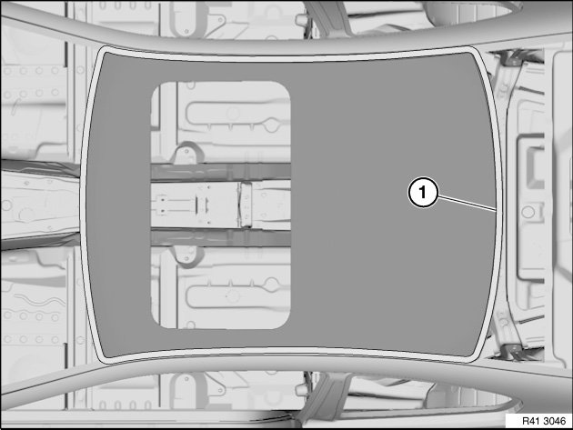
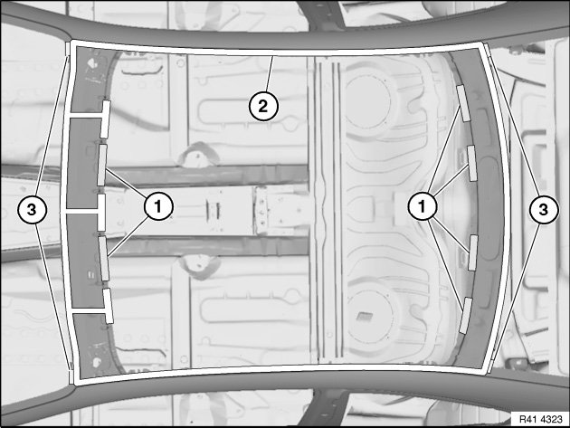
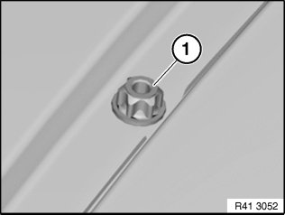
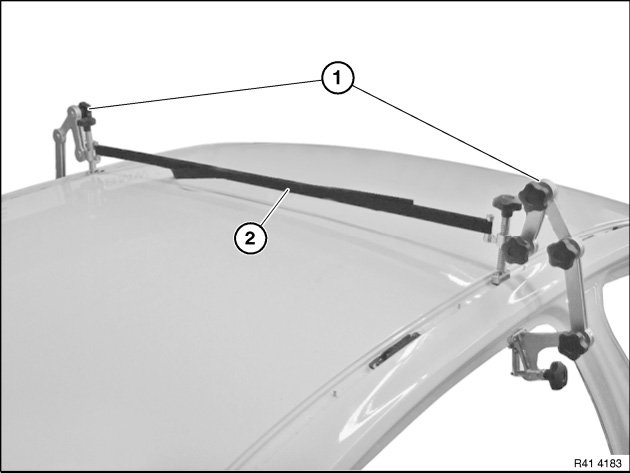
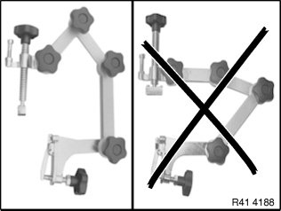
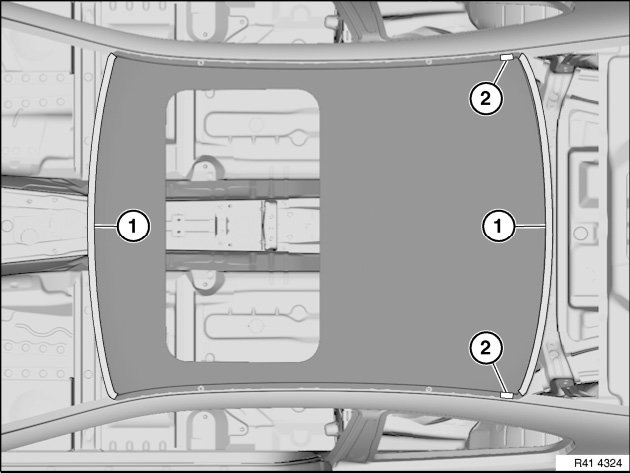
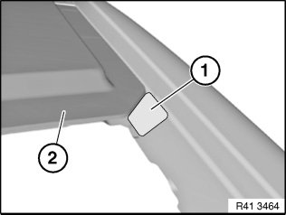
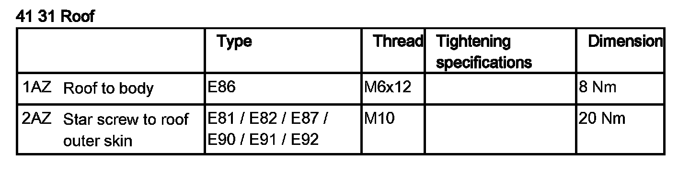

41 31 010 Replacing Roof Outer Skin (Version With Slide/Tilt Sunroof)
41 31 010 Replacing roof outer skin (version with slide/tilt sunroof)

Read contents of Body, General.
Strip down vehicle.

NOTE: Observe new procedure for bonding and riveting (repair stage 2).
Following new body parts are required (refer to Electronic Parts Catalogue):

- (1) Roof outer skin, slide/tilt sunroof
Following consumables are required:

Tools also required:
- Roof pliers set, order number: 81 43 2 158 707 Sourcing reference:
BMW Workshop Equipment Catalogue
Removing roof outer skin:

Release 4 screws (1) in roof channel.

Open welded connections in area (1).
Release adhesive areas at convertible top bow (for layout, see graphic R4141-23).
Take off roof outer skin.
Preparation of new part:
If necessary, place roof outer skin in position and fit in conjunction with roof trim strips.
Remove new part again.

IMPORTANT: Do not grind/sand new part in area of bonding surfaces.
Installing roof outer skin:
Clean bonding surfaces on vehicle and on new part with cleaning agent R1.

Apply sealant D1 in areas (1) analogously to Series.
Apply adhesive K5b in area (2).
Apply a little more adhesive to nodes (3) of A- and C-pillars.
NOTE: Excess material is later used for spreading to side frame.
Place roof outer skin with helpers evenly and centrally on vehicle.
Fit roof strips for positioning if necessary.

Insert 4 star screws (1) hand-tight.

Mount roof pliers (1) and secure with tensioning strap (2).
NOTE: Pictured on version without slide/tilt sunroof.

NOTE: To generate an optimum contact pressure, mount roof pliers according to the graphics as left.

Rivet roof outer skin with 12 punch rivets N4 in areas (1).
Set punch rivets in corners starting at a distance of approx. 200 mm.
NOTE: After hardening of the adhesive, install two EMC screws in the areas (2).
In so doing, bear in mind subsequent fitting of roof trim strips.
Mounting surfaces of roof trim strip clips must not be moistened with adhesive.

Adapt step (1) between roof outer skin (2) and A-pillar with emerging adhesive. Remove excess adhesive.
IMPORTANT: Do not use any cleaning agents containing solvents.
Do not leave any traces of sharp edges as this could compromise the tightness of the subsequent bond.
After the adhesive hardens, tighten 4 star screws in the roof channel.
Tightening torque 41 31 2AZ.
